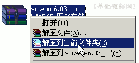
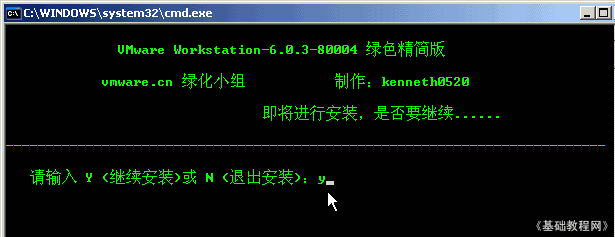
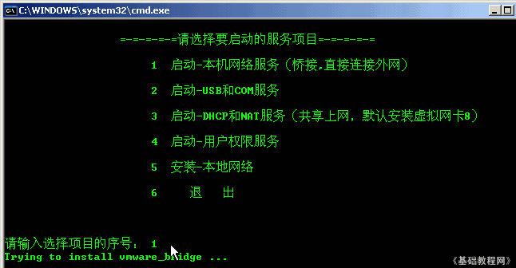
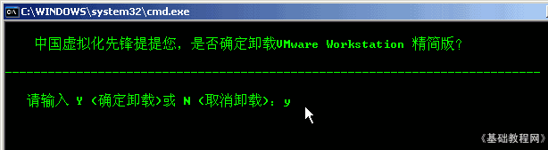

VMware 虚拟机基础入门教程
作者：TeliuTe 来源：基础教程网
一、下载安装 返回目录 下一课虚拟机是使用软件，在一个电脑里虚拟出另一台电脑，在虚拟机里操作不会影响到主机，因此可以用来学习电脑操作，下面我们来看一个练习；
1、下载VMware
1）6.0英文共享版下载：http://www.crsky.com/soft/1863.html
2）6.0汉化精简版下载：http://www.vmware.cn/Soft/1050.html
我们将用精简版来学习VMware虚拟机的使用方法；
2、安装
1）精简版是一个压缩包程序，下载以后可以用Winrar来解压；
2）复制到自己的文件夹里，然后再压缩包上点右键选“解压到当前文件夹”；

3）解压后当前文件夹里出来一个vmware6.03-80004的文件夹，
进入这个文件夹，在第一排找到一个名为“!)绿化”到文件，图标是齿轮；
4）双击运行这个“!)绿化”文件，出来一个黑色窗口，这是命令行窗口，
光标一闪一闪提示，按一下键盘上的字母 y，然后按一下回车键继续；

5）然后开始注册各个DLL文件，然后又出来一个提示界面，这儿是网络安装，按键盘上的数字 1 继续，
第一个桥接，是独立上网，第三个是随主机共享上网；

6）提示成功后，再按 6 退出命令行窗口，这样就成功地安装好了VMware虚拟机；
7）卸载的方法是，在文件夹里双击运行“!)卸载”，然后输入字母 y 后按回车键；
；
8）卸载以后可以用清理工具，清理一下可能残留的注册信息和服务；
cleanvm.bat.7z 1308_fVMware_Install_Cleaner.rar
本节学习了下载和安装VMware6绿色精简版的基本操作，如果你成功地完成了练习，请继续学习下一课内容；
本教程由86团学校TeliuTe制作|著作权所有
基础教程网：http://teliute.org
美丽的校园……
转载和引用本站内容，请保留作者和本站链接。